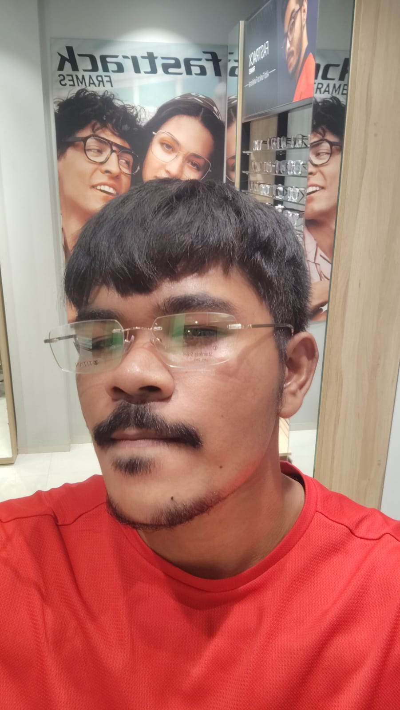

The person behind the model

Hi, I'm Subharaj Nandi — a student of Artificial Intelligence and Machine Learning, graduating from Sanskriti University.
I'm an aspiring AI engineer and software developer driven by curiosity and continuous learning. My focus is on building impactful applications, mastering modern technologies, and developing solutions that combine artificial intelligence with great user experiences.
Outside tech, I enjoy studying geopolitics, economics, and global trends — I find that understanding how the world actually works makes me better at building things for the people in it.
AI/ML
Full-Stack Dev
Geopolitics
Economics
// education
Academic background
2022 — Present
Sanskriti University
B.Tech in Artificial Intelligence & Machine Learning · CGPA: 7.6
Schooling
Senior Secondary Education
Overall score: 75%
// skills
Tools I build with
languages
Python
Java
C++
JavaScript
HTML
CSS
ml / ai frameworks
TensorFlow
PyTorch
NumPy
tools & platforms
Git
GitHub
MySQL
cloud
AWS